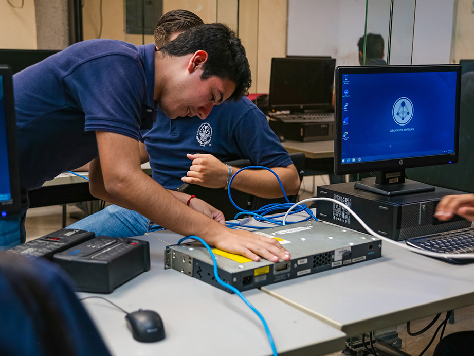

🚀 Unidad Didáctica 6 — Administración Avanzada y Proyectos¶

⏱️ Temporalización global¶
- Duración: 15 h (9 sesiones) / 160 h
- Lunes: 2 h · Martes: 2 h · Miércoles: 1 h
- Bloque: Redes y Seguridad
- Secuencia anual: UT 6 / 6
Meta · Integrar todos los conocimientos previos para automatizar el despliegue y mantenimiento de un servidor web seguro contenerizado (Docker-Compose), aplicando políticas de backup, hardening y documentación profesional.
🎯 ¿Qué vas a aprender?¶
- Shell scripting avanzado y automatización de mantenimiento.
- Virtualización ligera (Docker, LXC) y alta disponibilidad básica.
- Backup, snapshots y recuperación ante desastres.
- Despliegue completo de un servidor web seguro (HTTPS, firewall, IDS).
- Documentación profesional y defensa de proyectos.
🔎 ¿Qué haremos?¶
- Laboratorios en Proxmox / Docker.
- Scripts Bash avanzados con control de errores.
- docker-compose con varias redes, backup y restore.
- Proyecto final: “Servidor web seguro con Docker-Compose y hardening” con presentación grabada.
🎯 Criterios de evaluación y Resultados de aprendizaje¶
- CE 43. Implementa scripts de copia y restauración automatizada.
- CE 44. Configura servicios en alta disponibilidad básica.
- CE 45. Gestiona usuarios y permisos en entornos multi-nodo.
- CE 46. Aplica hardening y políticas de firewall en servicios expuestos.
- CE 47. Documenta incidencias y genera informes de servicio. :contentReference[oaicite:0]{index=0}
- CE 48. Analiza requisitos y elige tecnologías adecuadas.
- CE 49-50. Despliega la solución y verifica KPIs de rendimiento.
- CE 51. Presenta la solución justificando decisiones técnicas.
- CE 52-54. Evalúa impacto, coste y sostenibilidad. :contentReference[oaicite:1]{index=1}
- CE 57, 60, 63, 65. Trabajo en equipo, autoaprendizaje, ciberseguridad y sostenibilidad. :contentReference[oaicite:2]{index=2}
📑 Competencias profesionales y para la empleabilidad¶
- a) Configurar y explotar sistemas informáticos.
- b) Aplicar técnicas de seguridad.
- o) Elaborar y mantener documentación técnica.
- q) Resolver contingencias con iniciativa y autonomía.
📏 ¿Cómo se evalúa?¶
- Prácticas avanzadas de scripting, HA y backups.
- Cuestionarios AULES sobre HA y virtualización.
- Portafolio digital (Markdown + capturas + scripts).
- Proyecto final con rúbrica y defensa en vídeo.
🗂️ Planificación por actividades¶
| # | Tipo | Actividad | RA / RAT · CE | Ses. | H |
|---|---|---|---|---|---|
| 1 | Intro | Kahoot “¿Qué es HA?” + debate tendencias | RA6 · RAT2 → 43, 58 | 1 | 2 |
| 2 | Intro | Laboratorio Docker & Compose | RA6 → 44, 45 | 2 | 2 |
| 3 | Des. | Backup y snapshot automático (Borg) | RA6 → 43, 46 | 3 | 1 |
| 4 | Des. | Despliegue LAMP con Docker-Compose | RA6 → 44-46 | 4 | 2 |
| 5 | Des. | Hardening: Fail2ban + UFW | RA6 · RAT3 → 46, 61 | 5 | 2 |
| 6 | Des. | Bash avanzado: control de errores + logs | RA6 → 43, 47 | 6 | 1 |
| 7 | Des. | Plan de proyecto y reparto de roles | RA7 · RAT1 → 48, 55 | 7 | 2 |
| 8 | Ap. | Proyecto “Servidor web seguro” | RA6-7 · RAT1-4 | 8 | 2 |
| 9 | Eval. | Test + defensa grabada del proyecto | RA6-7 · RAT1-4 | 9 | 1 |
Las sesiones y horas son orientativas; se ajustarán según progreso.
1. Introducción¶
Esta unidad cierra el módulo integrando redes, sistemas y seguridad en un proyecto realista de producción. El alumnado desarrollará competencias para automatizar, securizar y mantener servicios críticos, reforzando la empleabilidad en roles DevOps y SysAdmin. :contentReference[oaicite:3]{index=3}
2. Objetivos didácticos¶
- Automatizar tareas complejas con scripts robustos.
- Desplegar servicios en alta disponibilidad básica.
- Implementar y documentar políticas de backup y hardening.
- Evaluar el rendimiento y la sostenibilidad de la solución.
- Presentar y defender proyectos con rigor profesional. :contentReference[oaicite:4]{index=4}
3. Contenidos¶
- Shell scripting avanzado: funciones, traps, manejo de errores.
- Virtualización ligera (Docker, LXC) y orquestación básica.
- Alta disponibilidad: balanceo RR y réplica.
- Copias de seguridad y snapshotting.
- Hardening y firewall (UFW, Fail2ban).
- Monitorización (
htop). - Metodología DevOps: Git, CI/CD simplificado.
- Documentación técnica (Markdown, diagrams.net). :contentReference[oaicite:5]{index=5}
4. Actividades y secuenciación¶
Fase 1: Introducción y motivación (Sesiones 1-2)¶
🎯 Sesión 1: Alta disponibilidad, ¿mito o realidad?¶
- Actividad: Quiz en Kahoot y debate sobre casos de caídas famosas.
- Implementación:
- Kahoot (12 preguntas).
- Grupos de debate: Amazon AWS 2020 vs GitHub 2023.
- Conclusiones en Padlet.
- Criterios: 43, 58 · Instrumentos: Kahoot, observación directa.
🐳 Sesión 2: Docker Compose en 20 min¶
- Actividad: Levantamos un servicio Nginx + MariaDB con Docker Compose.
- Implementación:
- Creación de
docker-compose.yml. - Persistencia en volúmenes y redes bridge.
- Prueba de escalado
docker compose up --scale. - Criterios: 44, 45 · Instrumentos: Rúbrica CLI, captura en portafolio.
Fase 2: Desarrollo (Sesiones 3-7)¶
- Sesión 3: Backups automáticos con Borg + cron, verificación y restore.
- Sesión 4: Pila LAMP.
- Sesión 5: Firewall UFW + Fail2ban, reglas y simulación de ataque.
- Sesión 6: Script Bash “health-check” con
trap, logs y mail. - Sesión 7: Redacción dossier de proyecto, reparto de tareas y KPIs.
Fase 3: Aplicación y evaluación (Sesiones 8-9)¶
🚀 Sesión 8: Proyecto “Servidor web seguro en clúster”¶
- Entrega: clúster vivo + script deploy + documentación Git + vídeo.
- Roles: DevOps, Seguridad, Documentación.
📝 Sesión 9: Evaluación final¶
- Cuestionario AULES (15 ítems).
- Defensa individual de 3 min frente a rúbrica de proyecto.
5. Instrumentos de evaluación (resumen)¶
| Instrumento | Evidencias | Sesiones |
|---|---|---|
| Observación directa | Participación, PRL, roles | Todas |
| Rúbricas prácticas | Backups, HA, hardening | 2-7 |
| Cuestionarios AULES | HA, scripting, sostenibilidad | 1, 6, 9 |
| Portafolio digital | Markdown + capturas + scripts | 2-8 |
| Rúbrica de proyecto | Diseño, implementación, seguridad, docu | 8-9 |
| Auto/co-evaluación | Reflexión y feedback | 7, 9 |
🛠️ Ejemplos¶
✅ Checklist PRL · Entorno de virtualización¶
| Ítem de seguridad | Sí | No | N/A |
|---|---|---|---|
| VM y contenedores etiquetados y aislados | □ | □ | □ |
| Backups verificados antes de actualizar | □ | □ | □ |
Se documentan cambios en Git antes de push |
□ | □ | □ |
| Firewall activo durante toda la práctica | □ | □ | □ |
| CPU/RAM limitadas para evitar sobrecargas | □ | □ | □ |
📜 Rúbrica · Script Backup & Restore¶
| Criterio | Excelente (9-10) | Notable (7-8) | Aprobado (5-6) | Insuficiente (<5) |
|---|---|---|---|---|
| Funcionalidad | Copia, comprime, cifra, verifica y restaura | Copia y verifica | Copia sin verificación | Falla o no restaura |
| Gestión de errores | Exhaustiva (trap + log) |
Control 1-2 fallos | Control mínimo | Sin control |
| Portabilidad | Sin rutas fijas, variables y args | 1-2 rutas fijas | Varias rutas fijas | No portable |
| Documentación | README + ejemplos | Uso y requisitos | Solo uso | Sin README |
🚀 Rúbrica · Proyecto “Servidor web seguro”¶
| Área | Peso | Excelente (9-10) | Notable (7-8) | Aprobado (5-6) | Insuficiente (<5) |
|---|---|---|---|---|---|
| Diseño & KPIs | 20 % | Diagrama + KPIs y riesgos | Diagrama completo | Diagrama básico | Incompleto |
| Implementación | 30 % | HA, HTTPS, IDS, backup ok | 3 de 4 ok | 2 de 4 ok | ≤ 1 ok |
| Documentación | 20 % | Markdown + vídeo + Git tags | Markdown completo | Markdown parcial | Sin docu |
| Sostenibilidad | 15 % | Consumo < 60 W medio | < 70 W | < 80 W | ≥ 80 W |
| Defensa oral | 15 % | Clara, técnica y convincente | Clara y correcta | Comprensible | Confusa |
📂 Portafolio digital · Lista de cotejo¶
- [ ] Carpeta
ud6/en OneDrive clase - [ ] Scripts y
docker-compose.ymlversionados en Git - [ ] Capturas de métricas y dashboards numeradas (≥ 8)
- [ ] README con arquitectura, KPIs y consumo estimado
- [ ] Vídeo demo ≤ 4 min enlazado
¡Proyecto listo, sistemas a prueba de fallos! 🔒